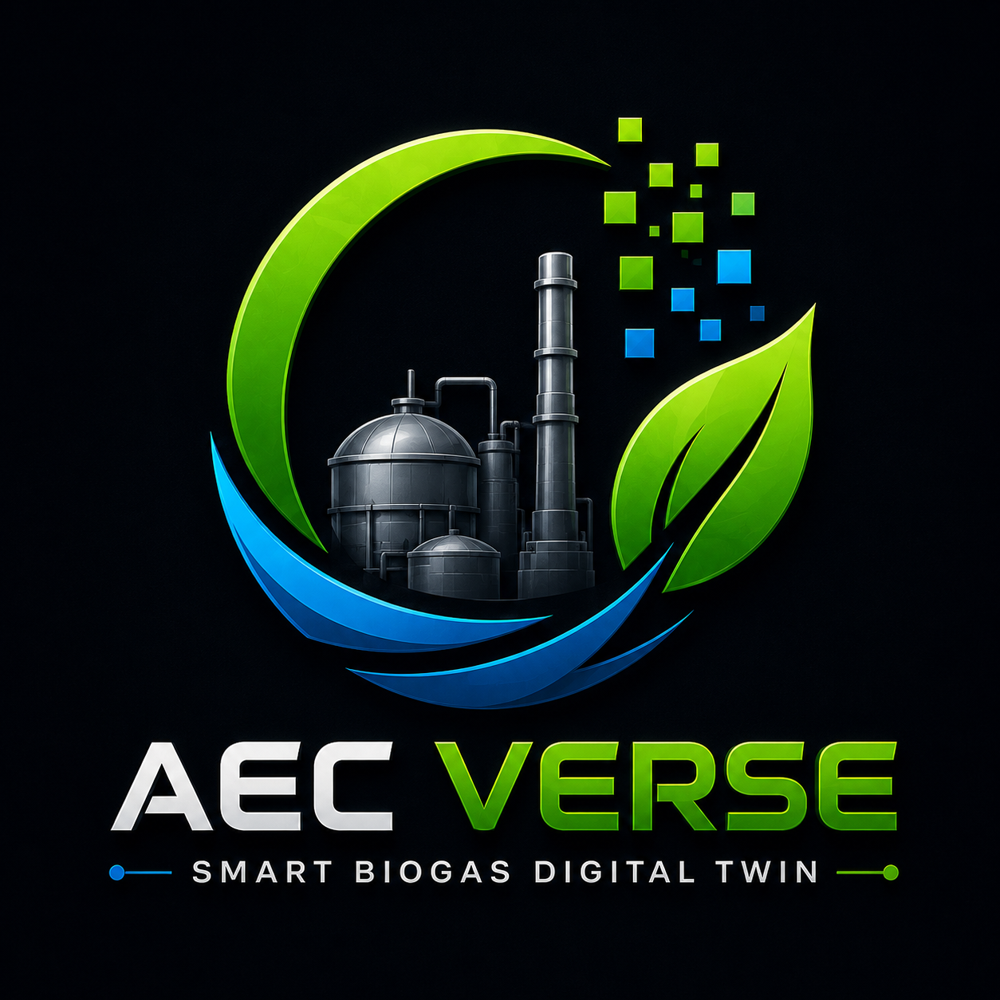

AEC
VERSE
SMART BIOGAS DIGITAL TWIN
ชื่อเล่นของคุณในโลกนี้
▶ เริ่มสำรวจ
กำลังโหลดโลก...
โมเดล
ปรับแต่ง
เลเยอร์
โมเดลโรงงาน
Biogas Digital Twin
อัปโหลดโมเดล 3D
เลือกไฟล์ .gltf / .glb / .fbx
สถานะ: รอการอัปโหลดโมเดล...
คลังโมเดลที่เคยอัปโหลด (เลือกแล้วโหลดได้เลย ไม่ต้องอัปโหลดซ้ำ)
กำลังโหลดรายการ...
🔄 รีเฟรชรายการ
เซฟ / โหลดฉาก
บันทึกฉากทั้งหมด (.zip)
โหลดฉากที่บันทึกไว้ (.zip)
ไฟล์เซฟเก็บทั้งตัวโมเดลและข้อมูลความปลอดภัยของทุกชิ้นส่วน
เครื่องมือปรับตำแหน่ง
Transform Tools
สิทธิ์การแก้ไข
✓ บัญชีของคุณเป็น Admin — ปรับตำแหน่งโมเดลได้
ระบบตรวจสิทธิ์จากบัญชีที่ล็อกอินให้อัตโนมัติ — กำหนดใครเป็น Admin ได้ที่ Settings → User Management การปรับตำแหน่งจะแสดงให้ทุกคนเห็นแบบเรียลไทม์
Gizmo (ลากในฉาก 3D)
↔ Move
⟳ Rotate
⤢ Scale
ลากแกนสี (แดง/เขียว/น้ำเงิน) ในฉาก 3D เพื่อปรับตำแหน่ง/หมุน/ขนาดโดยตรง — ตัวเลขด้านล่างจะอัปเดตตาม หรือพิมพ์ค่าที่ต้องการเองได้เลย ไม่จำกัดช่วงตัวเลข
ตำแหน่งแกน X (ซ้าย - ขวา)
ตำแหน่งแกน Y (ขึ้น - ลง)
ตำแหน่งแกน Z (หน้า - หลัง)
หมุนโมเดล (แนวราบ Y, องศา)
ขนาดโมเดล (Scale)
โหมดโครงสร้างพื้นผิว
Solid
Wireframe
X-Ray
ลบโมเดลออกจากฉาก
เลเยอร์ความปลอดภัย
Safety Visualization Layers
พื้นที่อันตราย Ex-Zone 0/1/2
Zone 0
Zone 1
Zone 2
ระยะปลอดภัย / ระยะร่น (Setback)
รัศมีป้องกันฟ้าผ่า (Rolling Sphere)
วงเตือนสวม PPE (15 ม.)
ป้ายเตือนลอยเหนืออุปกรณ์
เครื่องมือตรวจสอบ
วัดระยะ (คลิก 2 จุด)
📍 ลบจุดที่ปักไว้ทั้งหมด
จุดที่ปักไว้ผูกกับตำแหน่งในโลก ไม่ได้ผูกกับตัวโมเดล — เปลี่ยนโมเดลใหม่แล้วจุดเดิมจะยังค้างอยู่ กดปุ่มนี้เพื่อล้างทีเดียว (ทุกคนกดได้ และทุกคนจะเห็นผลพร้อมกัน)
เลเยอร์อ้างอิงข้อกำหนดมาตรฐานความปลอดภัยโรงไฟฟ้าก๊าซชีวภาพ: ระยะร่นแนวเขต ≥30 ม., หอเผา ≥7.5 ม., เครื่องยนต์ ≥15 ม., Rolling Sphere ป้องกันฟ้าผ่า ≈20 ม. — วงจะแสดงรอบอุปกรณ์ที่ถูกกำหนด Type ไว้
Multiplayer
กำลังเชื่อมต่อ...
👑 Admin:
0
ผู้เล่นออนไลน์ (
1
)
แชท
ส่ง
◂
▸
ยังไม่มีโมเดลในฉาก
อัปโหลดไฟล์ .gltf / .glb / .fbx จากแผง "โมเดล" ด้านซ้าย หรือโหลดฉากที่บันทึกไว้ (.zip) เพื่อเริ่มใช้งาน Digital Twin
โมเดลนี้ใหญ่เกินกว่าจะโหลดอัตโนมัติ
—
(
—
)
การเปิดดูอาจทำให้เบราว์เซอร์ค้างหรือแครช (Out of Memory) — แนะนำให้ลดขนาดโมเดลก่อน แต่ถ้าต้องการดูจริงๆ กดยืนยันด้านล่าง
🚀 โหลดเลย (เสี่ยงเบราว์เซอร์ค้าง)
🔍 Interact
🦘 Jump
🚶 กำลังเดินไป...
—
✕
CH4
—
FLOW
—
EFF
—
TANK-01
—
✓
กำลังเชื่อมต่อ...
▴
Selected Equipment: TANK-01 (ถังหมักที่ 1)
Pressure
—
Temp
—
pH
—
Level
—
Active Alerts
แชท
✕
ชิ้นส่วน: รอตรวจจับ...
ระบบตรวจจับ
🚶 เดินไปที่นี่
📍 กำหนดจุด
กำหนด Type
แก้ไขข้อมูล
บันทึก
ยกเลิก
มาตรฐานความปลอดภัย
คำอธิบาย...
สัญญาณเซนเซอร์จำลอง (IoT Telemetry)
สถานะอุปกรณ์:
ONLINE
แรงดันก๊าซ (Pressure):
0.00 bar
อุณหภูมิ (Temperature):
0.0 °C
ข้อกำหนดวิศวกรรม & PPE
H
เมนูหลัก
T
ปรับตำแหน่ง
M
รายชื่อชิ้นส่วน
R
รีเซ็ตมุมกล้อง
F
Free Look
Space
กระโดด
📏
วัดระยะ
⛶
เต็มจอ
V
ไมค์
/
แชท
0
U
Multiplayer
❓
วิธีใช้
รายการชิ้นส่วน
Structure Parts
ยังไม่มีชิ้นส่วน
รายการจะแสดงเมื่อโหลดโมเดลแล้ว
กำหนดประเภทอุปกรณ์
✕
📍 กำหนดจุด
✕
ชื่อจุด (เดินเข้าใกล้แล้วจะเห็นชื่อนี้)
สีของจุด — กดสีด่วน หรือลากเลือกเองในจานสี